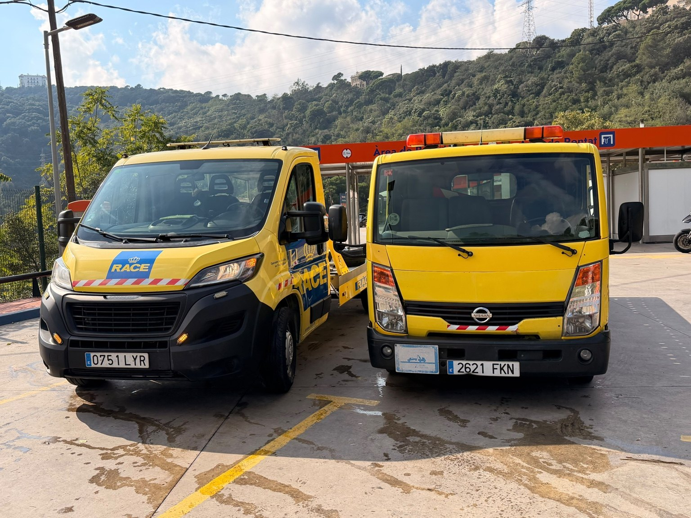
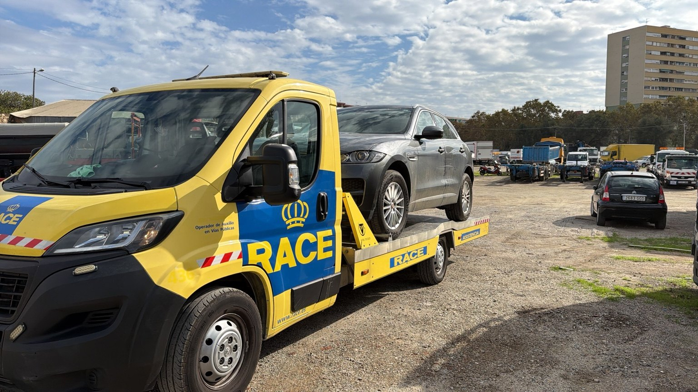
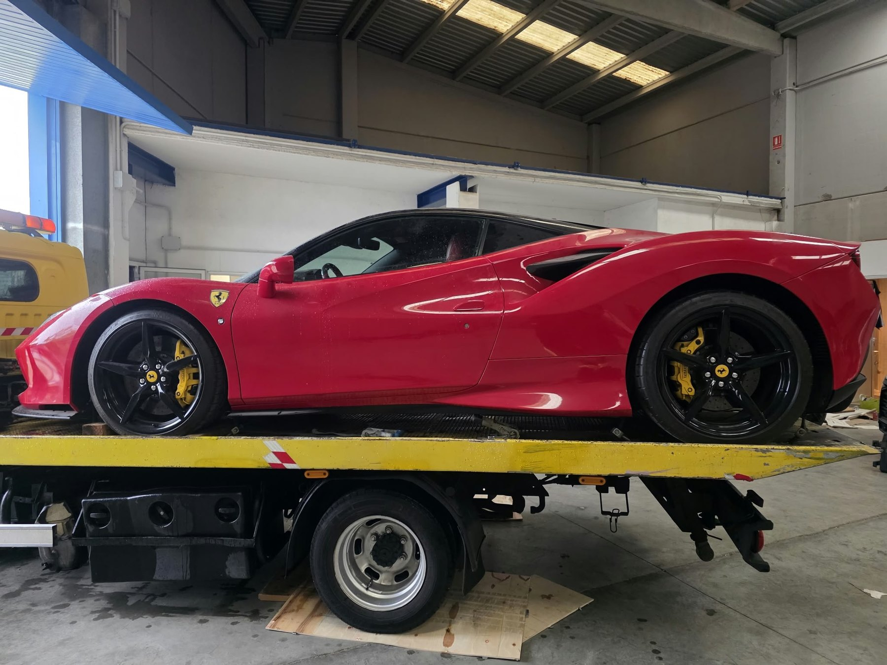
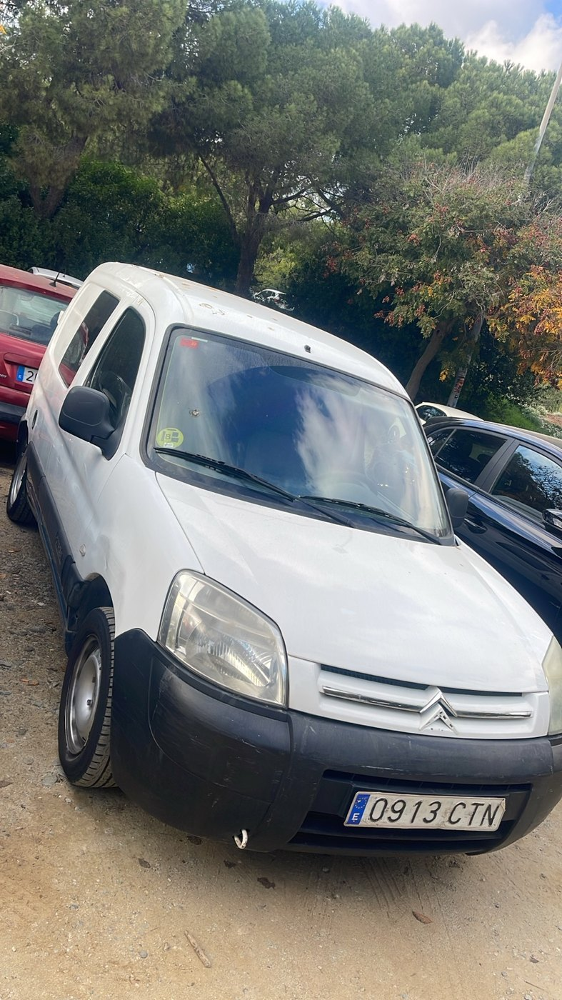
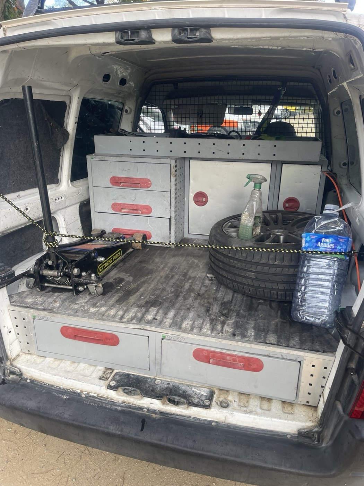

Nuestra flota y red de apoyo
Medios propios para asistencia y una red de colaboradores para ampliar la capacidad de coordinación y transporte.
Vehículos y medios de asistencia
Carvajal Motor 24H dispone de tres grúas y dos furgonetas taller. La asignación de cada vehículo se realiza según el tipo de servicio, peso, dimensiones, ubicación y disponibilidad.
La disponibilidad de cada vehículo se confirma al solicitar el servicio.





Más alcance, coordinando cada operación
Para rutas largas, transportes especiales o solicitudes internacionales podemos estudiar la intervención de colaboradores externos. Informamos de las condiciones y confirmamos el servicio antes de su contratación.
Más alcance, coordinando cada operación
Para rutas largas, transportes especiales o solicitudes internacionales podemos estudiar la intervención de colaboradores externos. Informamos de las condiciones y confirmamos el servicio antes de su contratación.